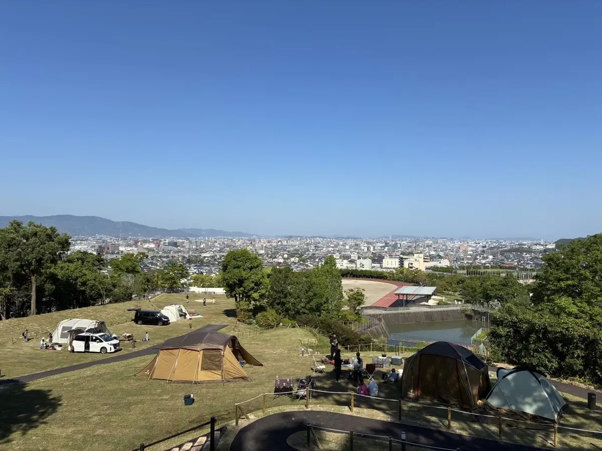
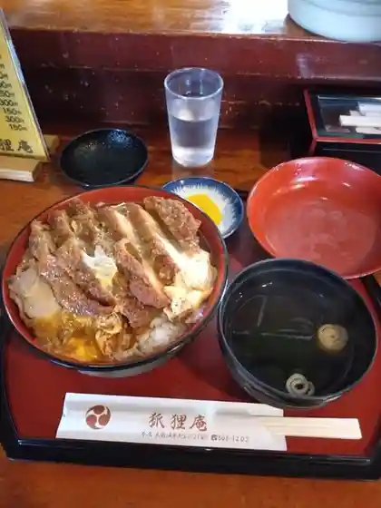
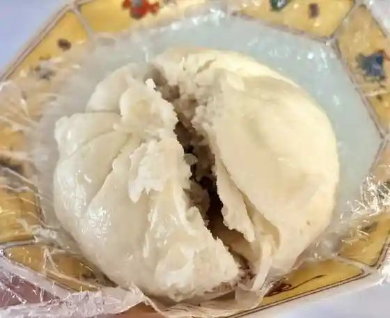
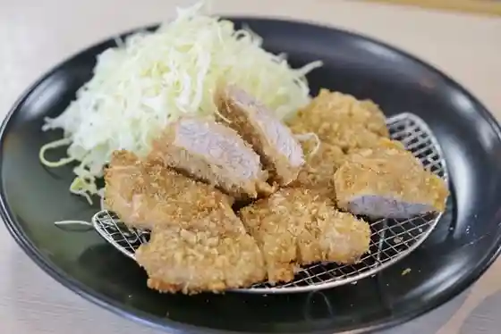
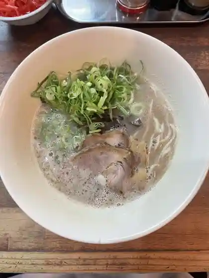
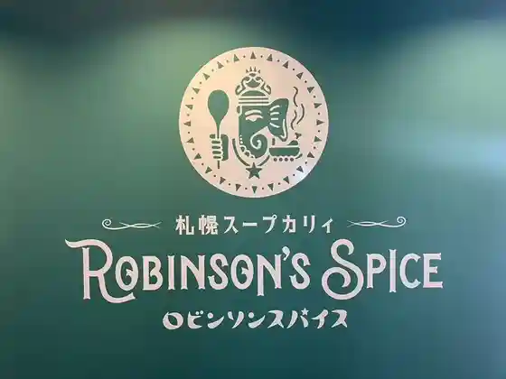
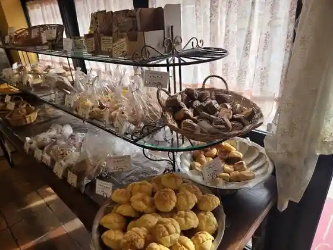
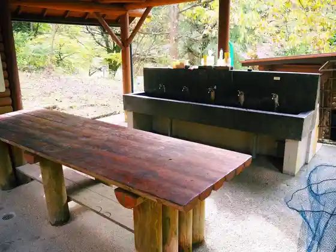
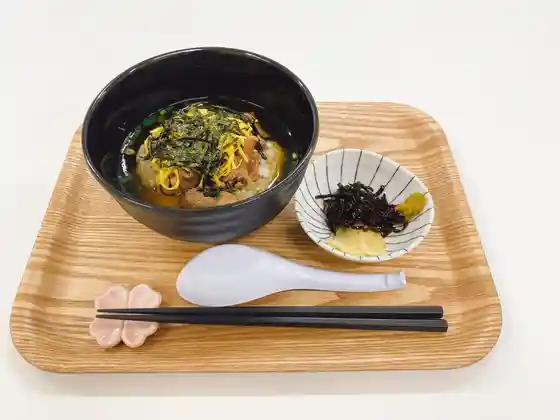
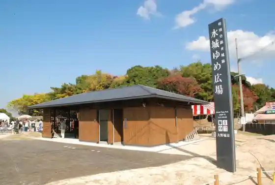

Onojo
Onojo · Fukuoka
Onojo
Highlighted on the Fukuoka map.

Dining
狐狸庵
Kori Iori

うどん大文字
Udon Oomoji

太平閣 白木原本店
Taihei Kaku Shirakibaru Honten

きんのつる 大野城店
Kinnotsuru Oonojou Mise

幸心堂
Sachi Kokoro Dou
豆香洞コーヒー 白木原店
Mame Kaori Hora Koohii Shirakibaru Mise
クリーブラッツ 若草店
Kuriiburattsu Wakakusa Mise

札幌スープカリィ ロビンソンスパイス
Sapporo Suupukarii Robinsonsupaisu

ロンブラージュ・ビガレ 白木原店
ロンブラージュ・ビガレ 白木原店
はるら
Harura
ラーメンおいげん 大野城店
Raamen Oigen Oonojou Mise
二重丸 大野城店
Nijuumaru Oonojou Mise
スイートバジル 大野城本店
Suiitobajiru Oonojou Honten
竹林
Chikurin
牛もつ鍋料理専門店 たま木
Ushi Motsu Nabe Ryouri Senmonten Tama Ki
鹿鳴
Rokumei
焼き鳥 ごきげん鳥 大野城店
Yakitori Gokigen Tori Oonojou Mise
麺処茶房 福
Men Tokoro Sabou Fuku
ステーキハウス WINNERs 大野城店
Suteekihausu Winners Oonojou Mise
小麦冶 大野城店
Komugi Ya Oonojou Mise
台湾料理 福飯店
Taiwan Ryouri Fuku Hanten
肉ちゃんうどん 大野城店
Niku Chan'udon Oonojou Mise
春日原 十八
Kasugabaru Juuhachi
福味居
Fuku Aji Kyo
博多アイアンマン 大野城店
Hakata Aianman Oonojou Mise
欧風懐石 勝
Oufuu Kaiseki Kachi
やきめしラーメンぽんぽこ
Yakimeshi Raamen Ponpoko
めし処 ひがし
Meshi Tokoro Higashi
ちんぷんかんぷん 春日原店
Chinpunkanpun Kasugabaru Mise
銀鮨
Gin Sushi
ペペチーノ 南バイパス店
Pepechiino Minami Baipasu Mise
甚徳うどん
Jin Toku Udon
リョーユーパン ハーフプライスベーカリー
Ryooyuupan Haafupuraisubeekarii
バニラの実 上大利店
Banira No Mi Ue Dairi Mise
おかわりビュッフェニコミーニョ
Okawari Byuffenikomiinyo
バニラの実 白木原本店
Banira No Mi Shirakibaru Honten
ペイ・バスク
ペイ・バスク
玄海丸 大野城御笠川店
Genkai Maru Oonojou Mikasa Kawa Mise
ブロンコビリー 大野城御笠川店
Buronkobirii Oonojou Mikasa Kawa Mise
十六番館
Juuroku Ban Kan
BISTRO CAFE and K
BISTRO CAFE and K
平野松栄堂
Heiya Shouei Dou
壱州苑
Ichi Shuu En
ここふるショップ カフェコーナー
Kokofuru Shoppu Kafekoonaa
桃花園
Touka Sono
酒場 Laugh Tale
Laugh Tale
みか月
Mika Gatsu
リストランテアンジェロ
Risutoranteanjiero
寿司こばやし
Sushi Kobayashi
パスタ食堂 アペルト
Pasuta Shokudo Aperuto
フレッシュ＆ハーフプライス ベーカリー
Furesshu & Haafupuraisu Beekarii
更科
Sarashina
つきじ大鳳
Tsukiji Ootori
バーバーバー サイゴン
Baabaabaa Saigon
アンテェナアト
Anteenaato
みっちゃんラーメン
Mitchan Raamen
焼鳥旬彩 道しるべ
Yakitori Jun Sai Michi Shirube
ひろちゃん
Hirochan
麺屋 おおたき
Men Ya Ootaki
ロイヤルチェスター福岡
Roiyaruchesutaa Fukuoka
グランドエンパイアホテル
Gurandoenpaiahoteru
うどんダイニング 万徳屋
Udon Dainingu Mantoku Ya
BLACK CAT CAFE
BLACK CAT CAFE
本格インド料理レストラン SURAJ
Honkaku Indo Ryouri Resutoran Suraj
やきにく 山北 御笠川店
Yakiniku Sanpoku Mikasa Kawa Mise
BASKING COFFEE kasugabaru
BASKING COFFEE kasugabaru
秀豪
Shuu Gou
ひろ
Hiro
今屋のハンバーガー 大野城わかくさ店
Ima Ya No Hanbaagaa Oonojou Wakakusa Mise
ルコネッサン
Rukonessan
蕎麦 史紋
Soba Shi Mon
大黒水産
Daikoku Suisan
丸亀製麺 大野城店
Marugame Seimen Oonojou Mise
お好み亭
O Konomi Tei
小さな小さな玄界灘 スシ男
Chiisa Na Chiisa Na Genkai Nada Sushi Otoko
オニギリ タケシ
Onigiri Takeshi
インド&ネパール料理 ポカラ
Indo & Nepaaru Ryouri Pokara
羊男ジンギスマン
Hitsujiotoko Jingisuman
独楽蔵
Koma Kura
make a choice
make a choice
パティスリー イチリュウ 大野城店
Pateisurii Ichiryuu Oonojou Mise
はかたや 大野城店
Hakataya Oonojou Mise
博多豚骨黒豚ブラザーズ 大野城店
Hakata Tonkotsu Kurobuta Burazaazu Oonojou Mise
大輝
Daiki
担々麺だるま
Tantanmen Daruma
居酒屋初夢
Izakaya Hatsuyume
穂積茶寮
Hozumi Charyou
ビストロユイット
Bisutoroyuitto
相撲鳥
Sumou Tori
酒とバラの日々
Sake To Bara No Hibi
信濃庵 大野城店
Shinano Iori Oonojou Mise
優菓
Yuu Ka
フランス料理 かもめ亭
Furansu Ryouri Kamome Tei
森のぶどう
Mori Nobudou
リッチモンド
Ritchimondo
すし辰
Sushi Tatsu
下大利ホルモン
Shita Dairi Horumon
TOKIO まどかぴあ店
TOKIO
食事処 大文字
Shokuji Tokoro Oomoji
サンク フルール
Sanku Furuuru
YAKITORI IZAKAYA Dining 東府
YAKITORI IZAKAYA Dining
梅庄
Ume Shou
焼鳥 かどや
Yakitori Kadoya
博多 一風堂 太宰府インター店
Hakata Ippuu Dou Dazaifu Intaa Mise
星乃珈琲店 福岡大野城店
Hoshino Koohii Mise Fukuokadai Noshiro Mise
想夫恋 大野城店
Soufu Koi Oonojou Mise
ロイヤルホスト 南バイパス店
Roiyaruhosuto Minami Baipasu Mise
看板の無いラーメン屋
Kanban No Nai Raamen Ya
焼肉 たしろ
Yakiniku Tashiro
魚誠
Sakana Makoto
久遊
Kyuu Yuu
大ちゃん 白木原店
Dai Chan Shirakibaru Mise
國 若草の小屋
Kuni Wakakusa No Koya
博多油そば151 白木原店
Hakata Abura Soba 151 Shirakibaru Mise
四季の里 將
Shiki No Sato Shou
串揚げどんぐり
Kushi Age Donguri
バー カームノット
Baa Kaamunotto
庁舎食堂 みぎわ
Chousha Shokudo Migiwa
炭と葡萄
Sumi To Budou
ミセス雅代
Misesu Masayo
畠中珈琲焙煎舎 大野城店
Hatanaka Koohii Baisen Sha Oonojou Mise
ヨルドット 春日原店
Yorudotto Kasugabaru Mise
Rally Coffee
Rally Coffee
ぜんしゅう家
Zenshuu Ie
アバシ 大野城南店
Abashi Oonojou Minami Mise
サイゼリヤ イオン大野城ＳＣ店
Saizeriya Ion Oonojou Sc Mise
スシロー 大野城 大城店
Sushiroo Oonojou Ooshiro Mise
ＣｏＣｏ壱番屋 福岡南バイパス店
Coco Ichiban Ya Fukuoka Minami Baipasu Mise
能古うどん イオン大野城店
Nokono Udon Ion Oonojou Mise
ウエスト 御笠川店
Uesuto Mikasa Kawa Mise
トリイコ
Toriiko
増田家
Masuda Ie
カフェ レソ
Kafe Reso
ぱんとおやつの店 はらっぱん
Pantooyatsuno Mise Harappan
日之出屋 大野城店
Hinode Ya Oonojou Mise
和氣あいあい
Waki Aiai
キラク創作居酒屋
Kiraku Sousaku Izakaya
本気炭火焼 うつけ
Honki Sumibi Yaki Utsuke
ろくのはん
Rokunohan
カフェ ヒュッテ 2号店
Kafe Hyutte 2 Gou Mise
ルナ ピエーナ
Runa Pieena
カジマキカレー
Kajimakikaree
グランジュテ タカヤマ
Guranjute Takayama
フードボートテラス
Fuudoboototerasu
かっぱ寿司 大野城店
Kappa Sushi Oonojou Mise
ジョイフル 福岡大野城店
Joifuru Fukuokadai Noshiro Mise
どんどん亭 大野城店
Dondon Tei Oonojou Mise
大野城川久保食堂
Oonojou Kawakubo Shokudo
吉野家 大野城店
Yoshinoya Oonojou Mise
はま寿司 大野城南ヶ丘店
Hama Sushi Oonojou Minami Ke Oka Mise
珈琲所 コメダ珈琲店 大野城乙金店
Koohii Tokoro Komeda Koohii Mise Oonojou Otsu Kin Mise
久遠チョコレート&DEMI-SEC 福岡大野城店
Kudou Chokoreeto &demi-sec Fukuokadai Noshiro Mise
リンガーハット 福岡白木原店
Ringaahatto Fukuoka Shirakibaru Mise
一品香 大野城店
Ippin Kaori Oonojou Mise
松屋 大野城横峰店
Matsuya Oonojou Yokomine Mise
やきとり安兵衛 下大利店
Yakitori Yasubee Shita Dairi Mise
九州筑豊ラーメン 山小屋 大野城店
Kyuushuu Chikuhou Raamen Yamagoya Oonojou Mise
琉球料理 安
Ryuukyuu Ryouri An
萬ちゃん
Man Chan
唐揚専門店 鶏膳
Karaage Senmonten Niwatori Zen
天然酵母ぱん 桃花
Tennen Koubo Pan Touka
由布
Yuu
ギャラリー大石
Gyararii Ooishi
たぬ久 大野城店
Tanu Kyuu Oonojou Mise
南風荘
Hae Sou
月と猫
Gatsu To Neko
ぼんぼり横丁 乙金BASE
Bonbori Yokochou Otsu Kin Base
よしだ屋
Yoshida Ya
YO-IRI
YO-IRI
いこいカフェ 大野城店
Ikoi Kafe Oonojou Mise
2610.COFFEE
2610.COFFEE
マクドナルド 3号線御笠川店
Makudonarudo 3 Gousen Mikasa Kawa Mise
想夫恋 上大利店
Soufu Koi Ue Dairi Mise
マクドナルド イオン大野城店
Makudonarudo Ion Oonojou Mise
元祖ムツゴロウのむっちゃん万十 下大利店
Ganso Mutsugorou Nomutchan Man Juu Shita Dairi Mise
やよい軒 イオン大野城店
Yayoi Ken Ion Oonojou Mise
ガスト 太宰府インター店
Gasuto Dazaifu Intaa Mise
モスバーガー 大野城店
Mosubaagaa Oonojou Mise
ワンカルビ 大野城店
Wankarubi Oonojou Mise
マクドナルド 大野城店
Makudonarudo Oonojou Mise
清香園 大野城店
Kiyoka Sono Oonojou Mise
博多中華そば 昇龍
Hakata Chuuka Soba Noboru Ryuu
ゆめ畑 大野城店
Yume Hatake Oonojou Mise
景寅
Keiin
花むら
Hana Mura
呑鳥
Don Tori
一力寿司
Ichiriki Sushi
和人さわらび
Kazuhito Sawarabi
ぢどり屋
Jidori Ya
居酒屋 わさび
Izakaya Wasabi
珍南亭
Chin Minami Tei
万歳
Banzai
クロワッサン
Kurowassan
ビストロ ロッシェ
Bisutoro Rosshie
レグラン
Reguran
如水庵 イオン大野城店
Josui Iori Ion Oonojou Mise
鮨 ゆうこう
Sushi Yuukou
城
Shiro
まるにふみ
Marunifumi
焼鳥赤ひげ
Yakitori Aka Hige
居酒屋 三満
Izakaya San Man
バンケットロイヤルホール
Bankettoroiyaruhooru
あそ望
Aso Bou
花禅
Hana Zen
大陸食堂アジアンカフェ
Tairiku Shokudo Ajiankafe
やきとり酒場 花ちゃん
Yakitori Sakaba Hana Chan
とんかつ 濵かつ 大野城緑ヶ丘店
Tonkatsu Tsu Oonojou Midorigaoka Mise
や台ずし 下大利駅西口町
Ya Dai Zushi Shita Dairi Eki Nishiguchi Machi
ケンタッキーフライドチキン 白木原店
Kentakkiifuraidochikin Shirakibaru Mise
鶏屋山崎 大野城本店
Niwatori Yayama Saki Oonojou Honten
からあげ酒場 たこしん
Karaage Sakaba Takoshin
道くさ
Michi Kusa
だいやめ
Daiyame
寿司割烹 海王
Sushi Kappou Kaiou
すゑ蜂
Sue Hachi
ミュゼ ド モーツアルト 大野城若草店
Myuze Do Mootsuaruto Oonojou Wakakusa Mise
パンだ屋
Pan Da Ya
Jazz Bea
Jazz Bea
Petite Kitchen
Petite Kitchen
SPICE
SPICE
お酒とお肉の食堂 エンジン
O Sake Too Niku No Shokudo Enjin
kitchenこずえ
kitchen
小屋cafe tori
cafe tori
茶房 ほんとよしなに
Sabou Hontoyoshinani
ミスタードーナツ イオン大野城ショップ
Misutaadoonatsu Ion Oonojou Shoppu
十六雑穀オムライス＆ドリア専門店 おむらいす亭 福岡イオン大野城店
Juuroku Zakkoku Omuraisu & Doria Senmonten Omuraisu Tei Fukuoka Ion Oonojou Mise
や台ずし 白木原町
Ya Dai Zushi Shirakibaru Machi
シャトレーゼ 大野城店
Shatoreeze Oonojou Mise
一本堂 福岡春日原店
Ippon Dou Fukuoka Kasugabaru Mise
つづみ団子 大野城店
Tsuzumi Dango Oonojou Mise
十勝あんこのサザエ イオン大野城
Tokachi Ankono Sazae Ion Oonojou
サーティワンアイスクリーム イオン大野城店
Saateiwan'aisukuriimu Ion Oonojou Mise
博多とよ唐亭 白木原店
Hakata Toyo Tou Tei Shirakibaru Mise
九州名物とめ手羽 白木原店
Kyuushuu Meibutsu Tome Teba Shirakibaru Mise
スモモ イオン乙金店
Sumomo Ion Otsu Kin Mise
モスバーガー 牛頸店
Mosubaagaa Ushi Kei Mise
晩酌亭 白木原店
Banshaku Tei Shirakibaru Mise
魚丼 春日原駅前店
Sakana Donburi Kasugabaru Ekimae Mise
とよ唐亭 乙金店
Toyo Tou Tei Otsu Kin Mise
からあげ 聖林 下大利駅前店
Karaage Shourin Shita Dairi Ekimae Mise
ほっともっと 山田店
Hottomotto Yamada Mise
パン工場 御笠川店
Pan Koujou Mikasa Kawa Mise
仁屋
Hitoshi Ya
千鳥屋 錦町店
Chidori Ya Nishikichou Mise
フードボートカフェ
Fuudobootokafe
串王DINER 乙金店
DINER
くろまる 白木原本店
Kuromaru Shirakibaru Honten
一味
Hitoaji
明月堂 イオン大野城店
Meigetsu Dou Ion Oonojou Mise
ほっともっと 大野城大城店
Hottomotto Oonojou Ooshiro Mise
とよ唐亭 春日原駅前店
Toyo Tou Tei Kasugabaru Ekimae Mise
吉野家 福岡春日原店
Yoshinoya Fukuoka Kasugabaru Mise
居酒屋 海舟
Izakaya Kaishuu
ほっともっと 大野城旭ヶ丘店
Hottomotto Oonojou Asahigaoka Mise
クック・チャム 南ヶ丘店
クック・チャム 南ヶ丘店
さか本
Saka Hon
博多大串 王手飛車
Hakata Oogushi Outehisha
カフェ ヒュッテ
Kafe Hyutte
湖月堂 イオン大野城店
Kogetsu Dou Ion Oonojou Mise
モンゴリー
Mongorii
イオンシネマ 大野城店
Ionshinema Oonojou Mise
しゅんら
Shunra
焼鳥百ちゃん
Yakitori Hyaku Chan
ほっともっと 南バイパス店
Hottomotto Minami Baipasu Mise
玉収
Tama Shuu
ケトルカフェ
Ketorukafe
クック・チャム まどかぴあ前店
クック・チャム まどかぴあ前店
ピザクック 大野城店
Pizakukku Oonojou Mise
カンパン
Kanpan
伽羅
Kara
焼とりやす
Yaki Toriyasu
カフェ トータス
Kafe Tootasu
やぐら
Yagura
大草
Ookusa
からつ庵 イオンモール乙金店
Karatsu Iori Ionmooru Otsu Kin Mise
鉄板焼き 縁亭
Teppanyaki Ki Heri Tei
Pan cosao
Pan cosao
大城の森
Ooshiro No Mori
ふわりぱん
Fuwaripan
Bread Factory イオン大野城ショッピングセンター
Bread Factory Ion Oonojou Shoppingusentaa
KFC 大野城若草店
Kfc Oonojou Wakakusa Mise
CAFE Lalala
CAFE Lalala
カラオケサウンドパーク 大野城店
Karaokesaundopaaku Oonojou Mise
サト～食鮮館 山田店
Sato ~ Shoku Sen Kan Yamada Mise
BAKED GOODS LAPIN
BAKED GOODS LAPIN
HAKATA 食パン家 若草店
HAKATA
からあげ専門店 鶏膳
Karaage Senmonten Niwatori Zen
焼鳥正吉
Yakitori Shoukichi
セブンイレブン 大野城御笠川4丁目店
Sebun'irebun Oonojou Mikasa Kawa 4 Choume Mise
ほっともっと 大野城まどかぴあ前店
Hottomotto Oonojou Madokapia Mae Mise
ミュゼドモーツアルト イオン大野城店
Myuzedomootsuaruto Ion Oonojou Mise
千茶堂 白木原店
Sen Cha Dou Shirakibaru Mise
Patisserie 一実 イオン乙金店
Patisserie
旬菜焚火 丸屋
Jun Na Takibi Maruya
ビーンズカフェ 南ヶ丘店
Biinzukafe Minami Ke Oka Mise
ベーカリーカフェ パンだ!屋 月の浦店
Beekariikafe Pan Da ! Ya Gatsu No Ura Mise
からあげ ドラゴン
Karaage Doragon
TeaWay イオン大野城店
TeaWay
Rcafe イオン乙金店
Rcafe
エナベーグル
Enabeeguru
お茶の山口園 イオン大野城SC
O Cha No Yamaguchi Sono Ion Oonojou Sc
かば田 イオン大野城店
Kaba Ta Ion Oonojou Mise
ドミノ・ピザ 下大利店
ドミノ・ピザ 下大利店
焼鳥酒場 みどるとん
Yakitori Sakaba Midoruton
マル通商店
Maru Tsuushou Mise
Sweet Lulu
Sweet Lulu
おむすびコロコロ 大野城店
Omusubi Korokoro Oonojou Mise
GOGO CHICKEN
GOGO CHICKEN
カルディコーヒーファーム イオン大野城SC店
Karudikoohiifaamu Ion Oonojou Sc Mise
natural natural イオン大野城
natural natural
地鶏屋台 雲鶏
Jidori Yatai Kumo Niwatori
イオン大野城
Ion Oonojou
マックスバリュ 下大利店
Makkusubaryu Shita Dairi Mise
ファミリーマート 大野城乙金店
Famiriimaato Oonojou Otsu Kin Mise
セブンイレブン 大野城下大利1丁目
Sebun'irebun Oonojou Shita Dairi 1 Choume
ファミリーマート 大野城山田
Famiriimaato Oonojou Yamada
CACCO COFFEE
CACCO COFFEE
太宰府ぎょうざ 六九 大野城大城店
Dazaifu Gyouza Roku Kyuu Oonojou Ooshiro Mise
Bio Ciao!
Bio Ciao
こすも
Kosumo
どんぶり勘定
Donburi Kanjou
焼とりろばた対州
Yaki Torirobata Taishuu
しかしま
Shikashima
マルキョウ 南大利店
Marukyou Minami Dairi Mise
エフコープ 大野城店
Efukoopu Oonojou Mise
味処 翔
Ajidokoro Shou
グラッツェ工房 豊か
Gurattsue Koubou Yutaka
レガネットマルシェ 下大利駅
Reganettomarushie Shita Dairi Eki
ほっともっと 南ヶ丘店
Hottomotto Minami Ke Oka Mise
マムスタジオ
Mamusutajio
福田酒店
Fukuda Saketen
Bar Fear-Less
Bar Fear-Less
大野珈琲商会
Oono Koohii Shoukai
ファミリーガーデン 大野城店
Famiriigaaden Oonojou Mise
ピザクック 春日原店
Pizakukku Kasugabaru Mise
鶏蘭轟
Niwatori Ran Todoroki
サクランボカフェ
Sakuranbokafe
Lundé
Lund
やはた丸
Yahata Maru
ボタニカル ワーク&カフェ ハナモミジ
Botanikaru Waaku & Kafe Hanamomiji
こいさん
Koisan
紗羅樹
Sara Ki
kiten
kiten
食べ飲み神社
Tabe Nomi Jinja
たのしや
Tanoshiya
味キ多
Aji Ki Ta
TRIAL GO 大野城まどかぴあ前店
TRIAL GO
ウィンドア
Uindoa
菜八
Na Hachi
ひょうたん島
Hyoutan Shima
まるや荘
Maruya Sou
亀寿司
Kameju Tsukasa
南ん子
Minami N Ko
カフェ鶴田
Kafe Tsuruta
グッドプリンファクトリー
Guddopurinfakutorii
ニクヤキ はなちゃん
Nikuyaki Hanachan
前菜酒家四季
Zensai Shuka Shiki
ユーバー
Yuubaa
呑み処 縁
Nomi Tokoro Heri
てん
Ten
愛菜野
Aina No
しげ
Shige
和×酒 英
Wa X Sake Ei
ローソン 大野城乙金三丁目店
Rooson Oonojou Otsu Kinzou Choume Mise
天勝寿し
Tenkatsu Hisashi Shi
自家焙煎珈琲 珈風
Jika Baisen Koohii Ka Kaze
Unagi Masudaya
Unagi Masudaya
Korian
Korian
IPPUDO Dazaifu Inter
IPPUDO Dazaifu Inter
Macllo
Macllo
Wasabi
Wasabi
Sofuren
Sofuren
Katsu
Katsu
Bakamori Pompoko
Bakamori Pompoko
Noko Udon Aeon Onojo
Noko Udon Aeon Onojo
Royal Host
Royal Host
Gyu Motsu Nabe Ryori Semmontentamaki
Gyu Motsu Nabe Ryori Semmontentamaki
Gusto Dazaifu Inter
Gusto Dazaifu Inter
Tokaen
Tokaen
Omrice Tei Fukuoka Eaon Onojo
Omrice Tei Fukuoka Eaon Onojo
Curry House CoCo Ichibanya Fukuoka Minami Bypass
Curry House CoCo Ichibanya Fukuoka Minami Bypass
Onojo Kawakubo Shokudo
Onojo Kawakubo Shokudo
Tonkatsu Hamakatsu Onojo Midorigaoka
Tonkatsu Hamakatsu Onojo Midorigaoka
Stone Oven Bakery Cree Bratz Wakakusa
Stone Oven Bakery Cree Bratz Wakakusa
Mos Burger Ushikubi
Mos Burger Ushikubi
Mister Donut Aeon Onojo
Mister Donut Aeon Onojo
Ringer Hut Fukuoka Shirakibaru
Ringer Hut Fukuoka Shirakibaru
Nijumaru Onojo
Nijumaru Onojo
Hamazushi Onojo Minamigaoka
Hamazushi Onojo Minamigaoka
Ryoyupan Fukuoka Factory
Ryoyupan Fukuoka Factory
Angelo
Angelo
Sofukoi Kami Ori
Sofukoi Kami Ori
Ginzushi
Ginzushi
Seikoen
Seikoen
Creative Dining Kaede
Creative Dining Kaede
Curry Shop Abashionojo Minamiten
Curry Shop Abashionojo Minamiten
Kimama No Daidokoro
Kimama No Daidokoro
Tonkatsu Taisho Onojo
Tonkatsu Taisho Onojo
Nikuniku Udon Mikasagawa
Nikuniku Udon Mikasagawa
Danjiri
Danjiri
Umino
Umino
French Restaurant Kamometei
French Restaurant Kamometei
Tanuhisaonojo
Tanuhisaonojo
Isaburo Bread Onojo
Isaburo Bread Onojo
Kurobuta Brothers Onojo
Kurobuta Brothers Onojo
Cook Cham Madoka Pia Before the Store
Cook Cham Madoka Pia Before the Store
Koshin Do
Koshin Do
Joyfull
Joyfull
Doncho
Doncho
Kettle Cafe
Kettle Cafe
Sakuchan Shokudo
Sakuchan Shokudo
Yatai Sushi Shirakihara Cho
Yatai Sushi Shirakihara Cho
Namasoba Azuma Wakagusa
Namasoba Azuma Wakagusa
Caffe Escasa Onojo
Caffe Escasa Onojo
Sennomichi Taiwanese Kitchen
Sennomichi Taiwanese Kitchen
Rice Omelette Onojosateiten
Rice Omelette Onojosateiten
Food Court Don Don
Food Court Don Don
Ichiryu Satie Onojo
Ichiryu Satie Onojo
Korean Yakiniku Yamakita Mikasagawa
Korean Yakiniku Yamakita Mikasagawa
Seasonal Japanese Food Kounichi Sakamoto
Seasonal Japanese Food Kounichi Sakamoto
Ikizukuri Motsunabe Izakaya Sawanoya
Ikizukuri Motsunabe Izakaya Sawanoya
Cafe Gallery Les Grands
Cafe Gallery Les Grands
Kasuga Shokudo Aeon Onojo
Kasuga Shokudo Aeon Onojo
India Restaurant Suraj
India Restaurant Suraj
Uotami Shimoori East Entrance Eki Mae
Uotami Shimoori East Entrance Eki Mae
Cafe Rezo
Cafe Rezo
Yakiniku Dainingu Wan Karubi Onojo Ten
Yakiniku Dainingu Wan Karubi Onojo Ten
Bistro Wagamamma
Bistro Wagamamma
Beans Cafe Minamigaoka
Beans Cafe Minamigaoka
Jirocho
Jirocho
Hormone Grilled Meat Specialty Store Sum Trillion
Hormone Grilled Meat Specialty Store Sum Trillion
Ishuen
Ishuen
Chikushi Sogo Chosha Shokudo
Chikushi Sogo Chosha Shokudo
Shinken Daidokoro Heppoko
Shinken Daidokoro Heppoko
Vegeniku
Vegeniku
Hatena Shokudo
Hatena Shokudo
Bakery Cafe Il Sole
Bakery Cafe Il Sole
Mizuki
Mizuki
Kato Chan Takoyaki
Kato Chan Takoyaki
Home Roasted Coffee Beans Boa Sorte
Home Roasted Coffee Beans Boa Sorte
Nangoku Toride Shokudo
Nangoku Toride Shokudo
Hide Chan Shokudo
Hide Chan Shokudo
Ramen Izakaya Kurenai
Ramen Izakaya Kurenai
Yatai Zushi Shimoori Station Nishiguchicho
Yatai Zushi Shimoori Station Nishiguchicho
Sound Park Onojo
Sound Park Onojo
Dango An
Dango An
Okonomiyaki Cafe Roman
Okonomiyaki Cafe Roman
Himawari
Himawari
Yakiniku Mori
Yakiniku Mori
Onomichi Ramen Ryuko
Onomichi Ramen Ryuko
Hachihachi Onojo
Hachihachi Onojo
Cafe Ori
Cafe Ori
Shimoori Western
Shimoori Western
Jirocho
Jirocho
Takoyaki Nishinari
Takoyaki Nishinari
America
America
Grill Stracchino
Grill Stracchino
Kyara
Kyara
Kagetora
Kagetora
Fresh Deli
Fresh Deli
Izayoi
Izayoi
Ichimi
Ichimi
Stop
Stop
Chinnante
Chinnante
Kakuuchi Daichan
Kakuuchi Daichan
Bistro Rosshe
Bistro Rosshe
Manpuku
Manpuku
Meridiana
Meridiana
Tezukuri Eurooean Bistro Miya
Tezukuri Eurooean Bistro Miya
Kaishu
Kaishu
Takoyaki Dining Takumi
Takoyaki Dining Takumi
Saraju
Saraju
Naya
Naya
Ryu cafe curry
Ryu cafe curry
Zenryoku Sumibi Yakitori Ahondara
Zenryoku Sumibi Yakitori Ahondara
Pizza Cooc Onojo
Pizza Cooc Onojo
Pizza Cooc Kasugabaru
Pizza Cooc Kasugabaru
Rosso From Pizza House Rosso
Rosso From Pizza House Rosso
Shimooori Hormone
Shimooori Hormone
Bronco Billy
Bronco Billy
Continent Cafeteria Asian Cafe
Continent Cafeteria Asian Cafe
Tavern Yamaboshi
Tavern Yamaboshi
Akizuki
Akizuki
Hakuyoken
Hakuyoken
Wano Daidokoro Ichikara
Wano Daidokoro Ichikara
BAR CALMKNOT
BAR CALMKNOT
Junsen Kobo Yufu
Junsen Kobo Yufu
Gyokushu
Gyokushu
Osaka Sozai Hana Goyomi
Osaka Sozai Hana Goyomi
Uwofuji
Uwofuji
Ogusa
Ogusa
Kokura
Kokura
Genki
Genki
Orange Kitchen
Orange Kitchen
Santon Restaurant
Santon Restaurant
Shunsai Magokoro
Shunsai Magokoro
Ikesu Kappo Kobayashi
Ikesu Kappo Kobayashi
Ryukyu Ryori An
Ryukyu Ryori An
Kame Sushi
Kame Sushi
Enkyo
Enkyo
Uohiro
Uohiro
Mugenonojoshi
Mugenonojoshi
Korean Restaurant Marronnier
Korean Restaurant Marronnier
Taketombo
Taketombo
Iyashizakedokoro Umakatsu
Iyashizakedokoro Umakatsu
Tongarashi
Tongarashi
Yamato
Yamato
Mendo Kusai
Mendo Kusai
Atsuko
Atsuko
Ishibashiotegaru Kappo
Ishibashiotegaru Kappo
Dining Daimonji
Dining Daimonji
Ikesu Shobai Shokubaka
Ikesu Shobai Shokubaka
Nanko
Nanko
Tenzan Minamigaoka
Tenzan Minamigaoka
Hakuhoken
Hakuhoken
Sumotori
Sumotori
Tentekomai
Tentekomai
Chinton Shiyan
Chinton Shiyan
Kuishimbo Arashi
Kuishimbo Arashi
Maison
Maison
Kitchen Jagaimo
Kitchen Jagaimo
Taste Processing Sho
Taste Processing Sho
Tongari
Tongari
Kushi Maru
Kushi Maru
Ramen Izakaya Samman
Ramen Izakaya Samman
Izakaya Aruchizanonoshiro
Izakaya Aruchizanonoshiro
Yakirori Jinya
Yakirori Jinya
Donku
Donku
Sho No Fune
Sho No Fune
Nampuso
Nampuso
Uccellino
Uccellino
Fuki Minamigaoka
Fuki Minamigaoka
Plain Shoyeido
Plain Shoyeido
Nishinari Sogo Jigyo Kumiai
Nishinari Sogo Jigyo Kumiai
Orange Grove
Orange Grove
Genkotsu Fukuoka
Genkotsu Fukuoka
Aishin Shokudo Shirakibaru
Aishin Shokudo Shirakibaru
Kazuto Sawarabi
Kazuto Sawarabi
Sangetsu
Sangetsu
Cook Cham Aeon Otogana
Cook Cham Aeon Otogana
Lombrage Bigarre
Lombrage Bigarre
Sweets Minorika
Sweets Minorika
Fumii
Fumii
Chankoya Gomangoku
Chankoya Gomangoku
Nagomian
Nagomian
KukyoCoffee
KukyoCoffee
Gyogyosuke Onojo
Gyogyosuke Onojo
Snack Amur
Snack Amur
Risudoru Ogi
Risudoru Ogi
Jurokubankan
Jurokubankan
Richmond
Richmond
Ishimura Yamada
Ishimura Yamada
Love Heart Dininig Room
Love Heart Dininig Room
Ogi No Mori
Ogi No Mori
Sweets of Atelier Yuka
Sweets of Atelier Yuka
Sights
Onojo Soramori Campground
Onojo Ikoi no Mori Campground

Shimin Museum Onojo Kokoro no Furusato Kan
Onojo Niwatori Bokkake

Mizu Castle Ruins (Yume Plaza)

Sutadomu Madoka
Ushi Kei Sue Utsuwa Kamato
Mizu Castle Ruins (Nishikado Ato)
Ume Atama Kamato
Mikasa Forest
Mizushiro Ato Dorui Danmen Hiroba
Onojo Ikoi no Mori Sanpo Michi no Ajisai
Mizu Castle Ruins (Ue Dairi Mizu Castle Ruins)
Yoshikazu Ta Kofun Gun